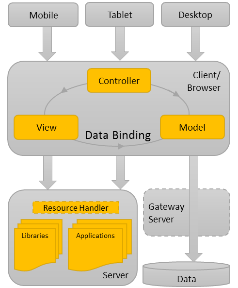

This chapter and its sections introduce the OpenUI5 architecture and the main concepts, such as the Model View Controller, data binding, and components.
OpenUI5 is a client UI technology based on JavaScript, CSS and HTML5. OpenUI5 applications run in a browser. Depending on the device the application is to run on (mobile, tablet or desktop PC), you use different UI libraries.
Servers come into play for deploying your applications, storing the OpenUI5 libraries and connecting to a database. Depending on the environment in which OpenUI5 is used, the libraries or your applications are stored on an SAP NetWeaver Application Server or an SAP HANA Cloud Platform, for instance. the preferred way to access business data for your application is using the OData model through a SAP Gateway.
When users access an OpenUI5 application from their device, a request is sent to the respective server to load the application into the browser. The view accesses the relevant libraries. Usually the model is also instantiated and business data is fetched from the database.

OpenUI5 uses the model view controller (MVC) concept to achieve the following objectives:
Support development in distributed teams with different source locations
Propose file structure, naming, and usage patterns
Add capability of UI declaration (in comparison to a programmatic construction)